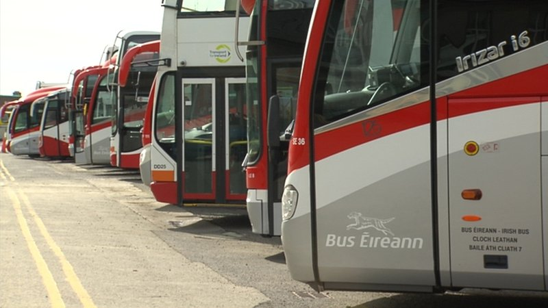

FLEMING-O CORP.
Putting the "new" in news!
Both sides in Bus Éireann dispute agree to WRC talks.
Unions and management at Bus Éireann are due to attend talks tomorrow at the Workplace Relations Commission in an effort to end the dispute at the company.
Pickets will remain on bus stations across the country, on what will be the 13th day of a strike over cost-cutting plans.
2,600 Bus Éireann staff have been on strike since 24 March in a dispute over cuts to pay and conditions, which management insists are essential to avert the prospect of insolvency at the loss-making company.
The strike is costing the company half a million euro per strike day - even after payroll savings are factored in.
The company lost €9.4m last year and further losses have been mounting at a rate of around €50,000 for each non-strike day this year.
In a statement, Bus Éireann has said that it has accepted the invitation to the talks and that achieving savings "to remain solvent and sustain the business is now vital".
Management at the company has already warned that it could be insolvent by next month - and industrial observers have speculated that the company may be approaching a tipping point where examinership may become a necessity.

SIPTU Sector Organiser Willie Noone this afternoon said: "Over the last 12 days of strike action our members have remained resolute in their position. They will not accept unilateral changes to their terms and conditions of employment.
"They will also not start down a road that would see their terms and conditions of employment forced into line with those of the lowest paid workers in the transport sector.
"To expect our members to return to work without resolving this situation or reversing the cuts that the company has already imposed on other workers is not reasonable or acceptable."
National Bus and Rail Union General Secretary Dermot O'Leary said: "We have always indicated our willingness to engage on an efficiency based agenda, geared towards resolving the industrial relations issues, which of itself will contribute to an overall solution to the Bus Éireann Expressway crisis, however it should be noted that we have been here before, management walking away on the previous two occasions, staff have been suffering cuts to pay and conditions since the 16th January, some of our members having been threatened with dismissal, an issue which will require to be addressed as a component of these discussions, in the meantime our members have resolved to remain on picket lines during the WRC talks process."